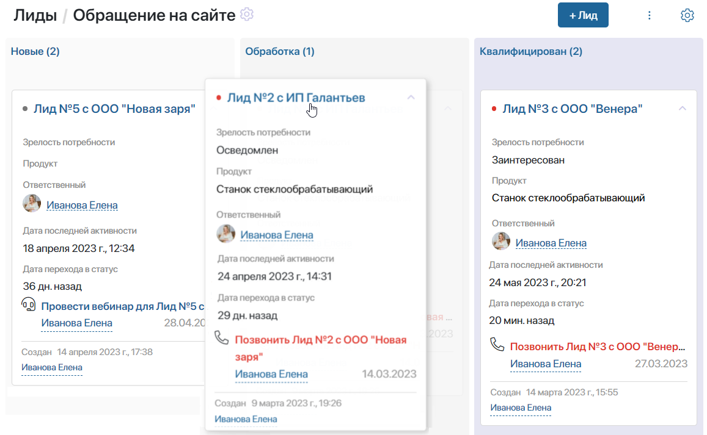
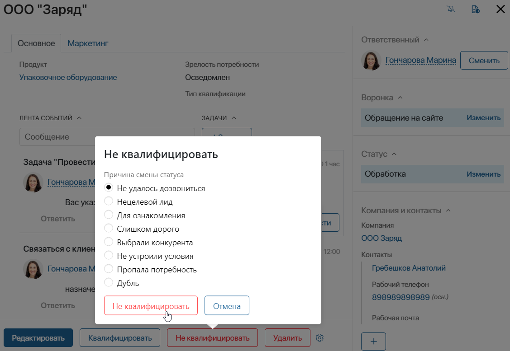
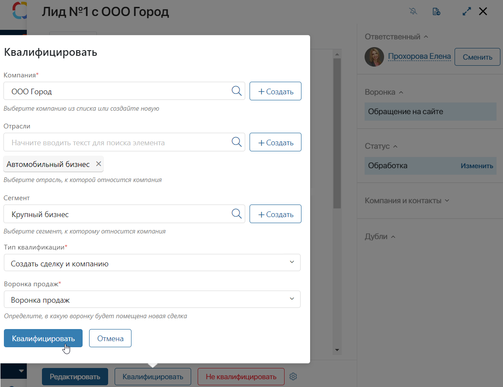
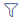
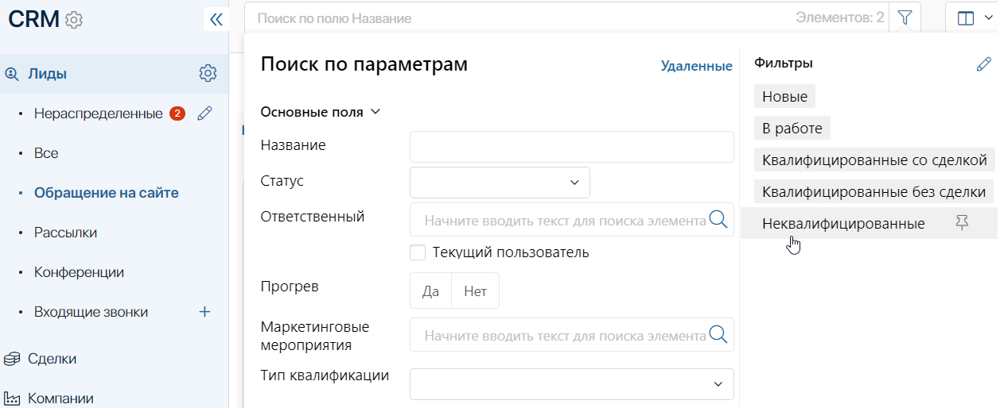

Когда статус лида изменяется, он передвигается по воронке с одного этапа на другой. Статусы выставляются вручную или автоматически в ходе бизнес-процесса. Это зависит от настроек воронки, заданных администратором системы.
По умолчанию у лидов могут быть следующие статусы:
- Новые — начальный статус созданного лида;
- Обработка — менеджер работает с клиентом, подготавливая его к сделке;
- Квалифицирован — квалифицируйте лид, если клиент проявляет высокую заинтересованность в продукте. При этом вы можете создать новую сделку или компанию;
- Неквалифицирован — поставьте этот статус и укажите причину неуспеха, например, не удалось дозвониться или клиент утратил интерес. В этом случае все связанные с лидом задачи CRM автоматически завершатся.
Также администратор системы может скрыть или показать статус лидов на канбан-доске. На странице воронки вы увидите только те этапы, к которым вам предоставлен доступ.
Дата перехода в статус фиксируется. В ассоциированной ленте лида записывается дата изменения каждого статуса. В карточке элемента на канбан-доске показывается, сколько дней назад ему присвоили текущий статус.
Изменить статус вручную
Если разрешена ручная смена статуса, пользователи с правом доступа на редактирование лидов могут вручную устанавливать статус элемента. Администратор системы может запретить переносить лиды на предыдущие этапы в настройках воронки.
Изменить статус можно следующими способами:
- На странице воронки в режиме отображения канбан-доска перетащить лид с одного этапа на другой, используя метод Drag-and-Drop.

- Если лид находится в статусе Обработка, в его карточке на нижней панели нажать одну из кнопок:
- Квалифицировать — запустить процесс квалификации лида. В ходе процесса вы сможете создать сделку или компанию из лида;
- Не квалифицировать — закончить работу с лидом.
При смене статуса на Неквалифицирован любым способом выберите причину неуспеха. Список доступных причин отказа может изменить администратор системы. Подробнее об этом читайте в статье «Воронки лидов».

Автоматическая смена статуса
Если в настройках воронки выбрана смена статусов согласно схеме бизнес-процесса, лид перемещается с одного этапа воронки на другой автоматически. Это происходит, когда пользователи завершают задачи, назначенные им в ходе процесса.
Квалифицировать лид
Когда потенциальный клиент проявляет высокую заинтересованность в продукте, вы можете перевести лид в сделку и продолжать работу с ней.
Для этого используется бизнес-процесс квалификации лида. Администратор системы может изменить процесс согласно требованиям вашей компании.
Чтобы квалифицировать лид:
- Запустите бизнес-процесс квалификации. Это можно сделать несколькими способами:
- в карточке лида на нижней панели нажмите кнопку Квалифицировать. Появится всплывающее окно, в котором необходимо ввести данные по квалификации;
- в карточке лида на боковой панели измените статус лида на Квалифицирован. Ответственному менеджеру будет назначена задача заполнить данные по квалификации;
- на странице воронки перенесите лид в колонку Квалифицирован при помощи метода Drag-and-Drop. Ответственному менеджеру будет назначена задача заполнить данные по квалификации.
- Во всплывающем окне или на форме задачи заполните поля:

- Компания* — привяжите компанию к лиду и новой сделке. Выберите существующего контрагента, нажав на значок лупы, или добавьте новую компанию, нажав на кнопку + Создать;
- Отрасли, Сегмент — заполните поля, указав записи из справочников раздела CRM Отрасли и Сегменты. Выберите из существующих элементов, нажав на значок лупы в поле, или добавьте новую запись, нажав на кнопку + Создать;
- Тип квалификации* — выберите один из вариантов в выпадающем списке:
- Создать сделку и компанию — при выборе этой опции необходимо также указать воронку, в которую добавится новая сделка;
- Создать только компанию — выберите этот вариант, если сделка пока отложена. В дальнейшем вы сможете добавить сделку на карточке лида или компании, нажав на боковой панели кнопку
 рядом с полем Сделка.
рядом с полем Сделка.
- Нажмите Квалифицировать.
После квалификации вы больше не сможете изменять статус лида. Работа с ним продолжается в рамках созданной сделки.
Как просматривать лиды в финальных статусах
Статусы Квалифицирован и Неквалифицирован являются финальными.
По умолчанию квалифицированные лиды можно просмотреть на странице воронки, а неквалифицированные лиды из неё скрываются.
Просматривать лиды с финальными статусами можно при помощи преднастроенных фильтров. Для этого перейдите в нужную воронку, в строке поиска вверху страницы нажмите .
В правой части открывшегося окна выберите фильтр.

Вы можете использовать комбинацию фильтров, чтобы уточнить поиск. Подробнее читайте в статье «Поиск и фильтры».
Кроме того, администратор системы может настроить постоянное отображение лидов с финальными статусами в настройках воронки.
Как продолжить работу с лидом в финальном статусе
По умолчанию если вы перевели лид в один из финальных статусов, изменить статус становится невозможно. Если необходимо снова начать работу с лидом, используйте кнопку Сменить статус. Её может добавить в карточку лида администратор системы. Подробнее читайте в статье «Управление кнопками в карточках элемента приложения».